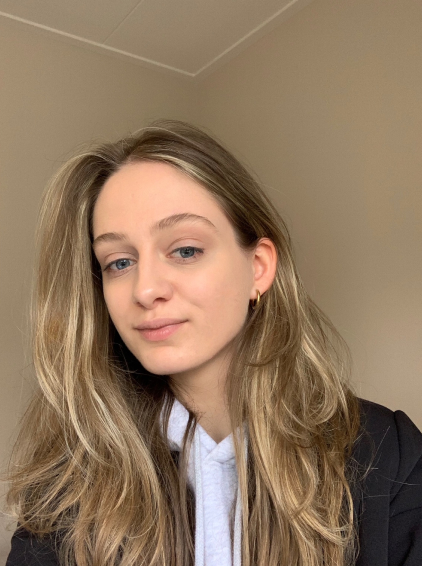
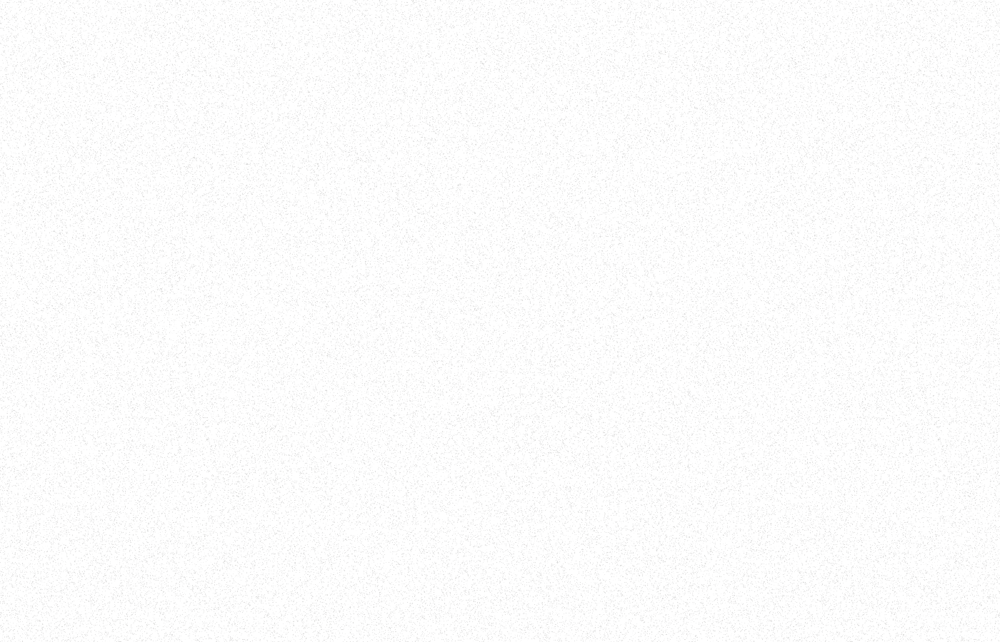
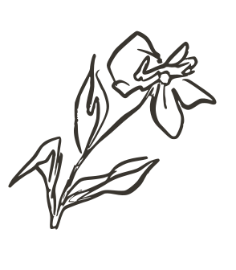

- Branding
- Design Thinking
- Wireframing
- UI Design
- UX Design
- Datavisualisatie
- Figma
- Adobe Tools
- Html
- Css
- JavaScript
- Gsap
- D3


11-24 tot 04-25
Mijn naam is Lynn Wolters en ik ben een 24 jaar oude CMD student bij de Hogeschool Van Amsterdam.
Ik hou van het brainstorm- en iteratieproces, waarin je van niets naar iets gaat en slimme oplossingen bedenkt die het leven van de gebruiker makkelijker of leuker maken - daar gaat mijn hart sneller van kloppen.
Tot nu toe lag mijn focus altijd op het uitvoeren van opdrachten maar ik zoek meer diepgang en voldoening.
Ik wil daarom graag meewerken aan unieke digitale ervaringen die waarde toevoegen, zoals serious games, interactieve datavisualisaties en digitale services.
Ik heb eerst de opleiding Mediavormgeving afgerond aan het ROC van Twente in Enschede, waarbij ik de richting van interaction design in ben gegaan. Daarna ben ik begonnen met Communicatie and Multimedia Design aan de Hogeschool van Amsterdam.
Tijdens mijn derde jaar volgde ik voor een halfjaar de minor Information Design en daarna de minor Web Design en Development, waar ik mijn vaardigheden in digital design en front-end development verder heb verdiept.

Ik heb een tijdje studenten ondersteund tijdens de front-end development lessen, dit waren mijn taken: vragen beantwoorden, theorie uitleggen en les geven in accessibility en semantische html.
Tijdens mijn stageperiode bij Lama Lama heb ik de interne strategie website ontworpen en ontwikkeld waarbij de focus lag op het implementeren van interactieve / motion elementen. Tijdens deze periode heb ik veel kennis opgedaan wat betreft creative coding, object-oriented programming en skills geleerd die erg waardevol zijn. Daarnaast heb ik deze opdracht / stage succesvol afgerond met een 10!
Ik heb het brandbook van Stimmt en de webshop voor Tableware by Ter Steege ontworpen en ontwikkeld in Figma en Shopify. Hierbij heb ik veel ervaring opgedaan in user interface/experience design, met focus op het ontwerpen van consistente en gebruiksvriendelijke interfaces.
Tijdens mijn stage bij Nerds & Company heb ik mij gericht op branding in combinatie met digital design. Ik werkte aan een fictieve redesign van Swapfiets, waarbij ik een sterk concept en een aantrekkelijk ontwerp neerzette. Dit heeft mijn inzicht in branding en digital design verder verdiept.
Het allereerste wat ik ooit heb gedaan in deze industrie waren freelance branding klusjes en het ontwikkelen van WordPress websites.
Ik kan niet wachten om voor het laatste jaar nog echt iets gaafs neer te zetten. Heb jij een plekje vrij waarin ik betekenisvolle digitale ervaringen kan ontwikkelen? Dan hoor ik heel graag van je.
Misschien tot snel!
Lynn